TEAM
Meet our team members! Connect on Linkedin by clicking our headshots.
Jay Kim-Turner - Founder and President

I am a sophomore attending the University of California, Berkeley studying political science and economics. In the past, I have heavily been involved in speech and debate events, with a particular emphasis on Parliamentary debate and Impromptu speech. I had the high honor of serving as President of my high school’s Speech and Debate team during my senior year. Some things I like to do in my free time are watch and play sports, TV shows, and movies, as well as exercise.I started the Masked Heroes Initiative because I believe that we cannot sit on the sidelines and expect for COVID-19 to disappear. It is up to us — all of us — to actively defeat it together and put this crisis behind us.
Finance
Finance is divided into two subdivisions: External Finance and Internal Finance. External Finance is responsible for creating new avenues and ideas of fundraising, while Internal Finance is responsible for the recording, logging, and reporting of all financial transactions and activity.External Finance

 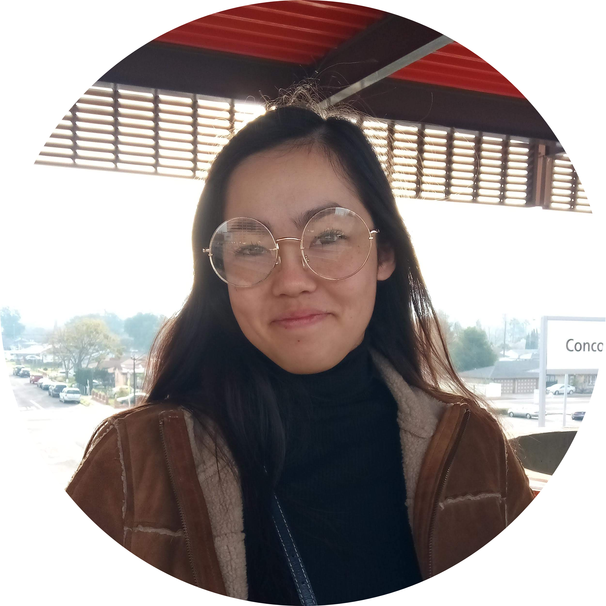
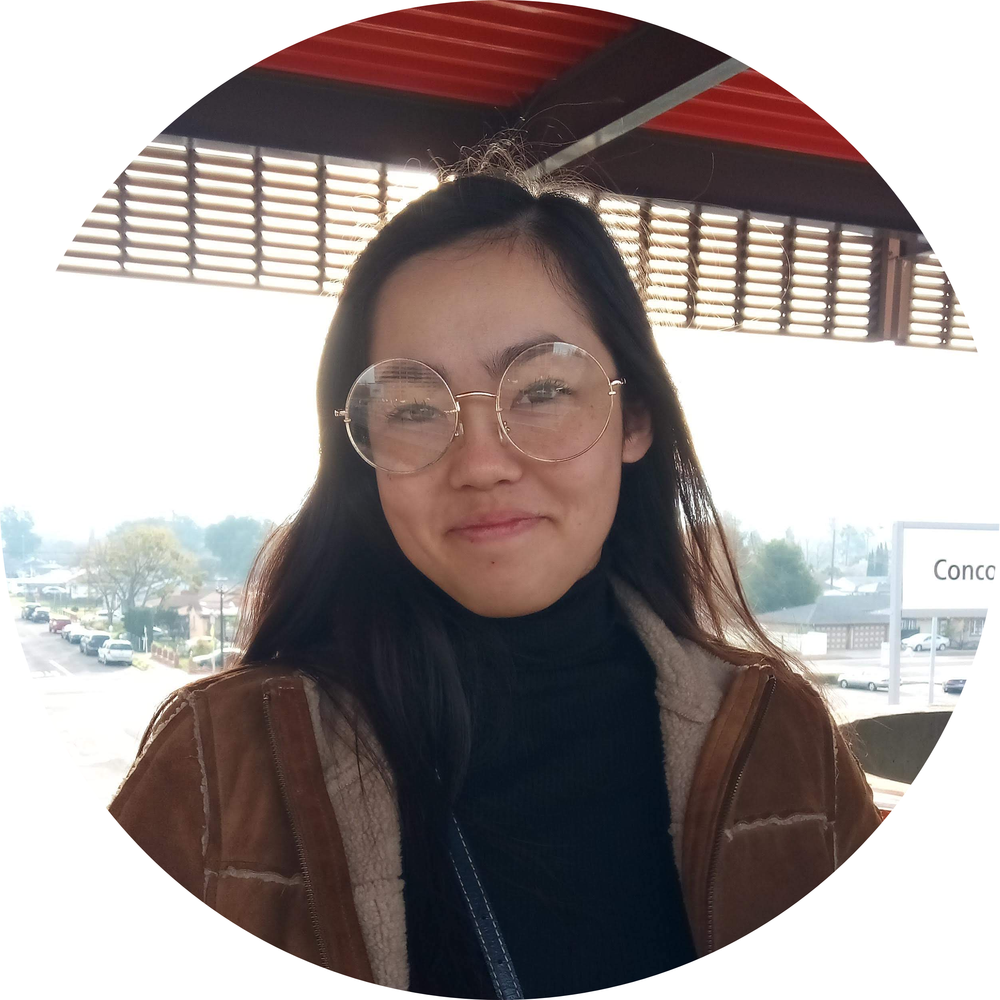
Adila Ahmed, Director of External Finance
Hello! My name is Adila Ahmed and I am an incoming freshman at UCLA pursuing a Bachelor's degree in Biochemistry on the premed track. I plan to pursue a career in the medical field with a potential focus in neurology or cardiology. At the high school level, I was involved in Mock Trial, Speech and Debate, TedX, Science Olympiad and various other extracurriculars that allowed me to work on my public speaking and communication skills, strengthen my leadership abilities, and discuss important topics in our world. As a part of External Finances in MHI, I mainly work on fundraising, applying for grants, and communicating with businesses to cooperate with. Outside of academics, I enjoy mentoring middle school students in Los Angeles county and tutoring students in STEM. In my free time, I enjoy dancing, music, playing tennis, watching a lot of Asian dramas, and exploring my Indian heritage!Carolynn Pham, External Finance Associate
I am a second year pursuing a Bachelor of Science degree in Psychobiology with a minor in Gerontology at University of California, Los Angeles. I wholly enjoy working with elders, and I hope to make my passion for geriatric medicine into a career in the future, alongside working to raise awareness on elder abuse, and contributing wholeheartedly to geriatric’s research to make a difference. Outside of MHI, I am in a program that supports and cares for patients with dementia, an internship supporting surgical doctors in the hospital, a research lab on neurological brain diseases, and a Pre-Medical club. In my free time, I enjoy reading, exploring philosophy, poetry, spending quality time, and helping others.Anya Holbrook, External Finance Associate
Hi, my name is Anya Holbrook and I am a second year Molecular, Cell, and Developmental Biology major at UCLA, currently studying in the Bay Area for the fall quarter. In the future, I hope to pursue either a career in pediatrics or genetics, potentially genetic medicine. For the time being, I am working with MHI as a member of the external finance team in order to give back to my community and help make a difference during the COVID-19 pandemic. In my free time, I enjoy cooking, painting, watching and doing gymnastics, and exploring the Bay!Internal Finance


 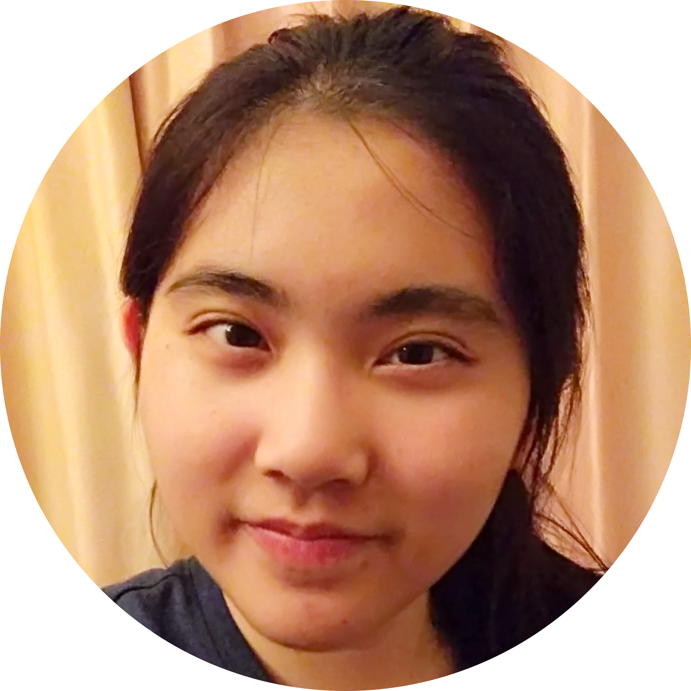
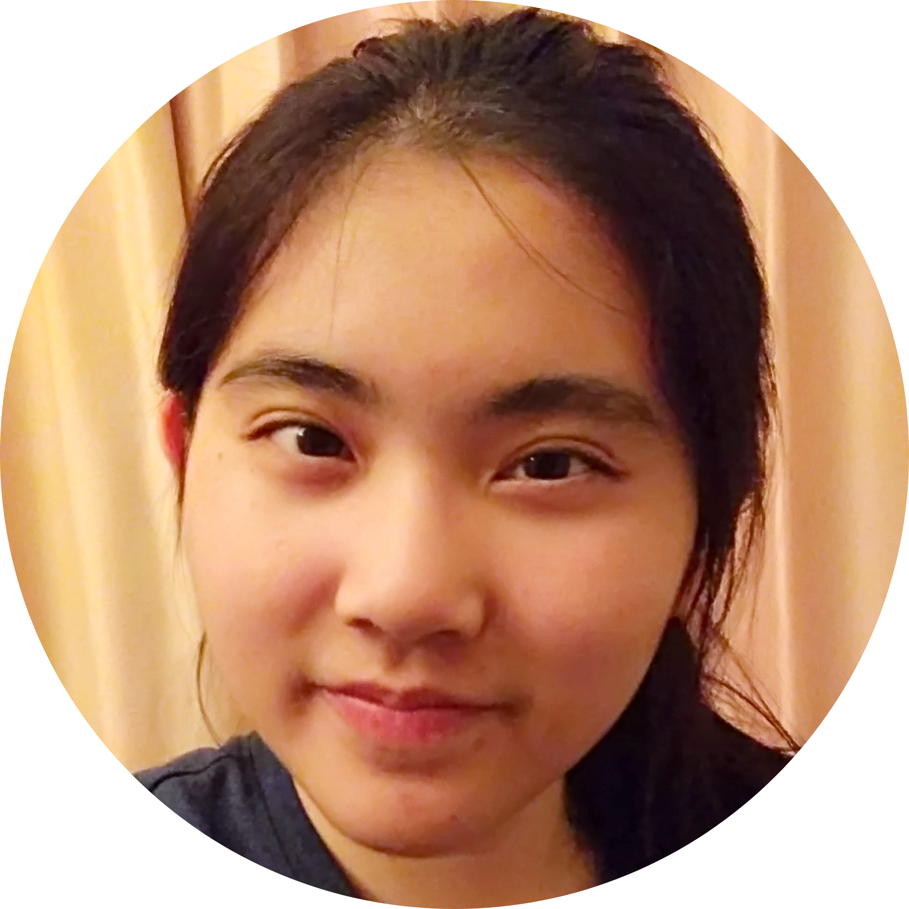
Brian Trinh, Chief Financial Officer
Hello, my name is Brian Trinh. I am a student at California State Polytechnic University, Pomona pursuing a Bachelor’s degree in Chemical Engineering and minors in Mechanical Engineering and Materials Engineering. I love two things: math and piano. Piano is my favorite hobby because music is so universal and a great way to convey emotions. I am also involved with VSA in Cal Poly Pomona. Masked Heroes Initiative is a way I can give back to the community by supplying PPE to those who desperately need it. In MHI, I oversee all internal financial activities of MHI to ensure proper management of funds.Kenton Trinh, Internal Finance Associate
Hi! My name is Kenton Trinh and I am the youngest member of this organization. I am currently a senior at Valencia High School. I plan to possibly study chemistry or music when I get into college. In my free time, I like to play video games with my brother, talk with friends, and read. As Secretary, I document weekly meetings, compile biweekly reports on all donations and expenditures at MHI, and assist in any and all projects.Jae Jeon, Internal Finance Associate
Hey! My name is Jae Jeon and I am a second-year Psychobiology major at UCLA. I am staying in South Korea for the fall quarter. In the future, I hope to pursue a career in medicine, specifically in adolescent psychiatry. My role in MHI is to organize the receipts and keep track of all sources of income and spending at MHI and the UCLA branch. Outside of MHI, I am currently assisting research in stroke and stroke recovery, and I work part-time at a Vietnamese restaurant. I also work as a TA at an English academy, where I tutor middle school kids after school. In my free time, I like to eat outside with my friends, exercise, or watch TV shows.Emily Kusumoputro, Internal Finance Associate
Hello! My name is Emily and I am currently a second-year Biology major at UC Riverside with hopes of pursuing a career in the field of health sciences. I joined MHI because I strongly resonated with this organization's mission to promote safety while providing to underserved communities. As treasurer, my responsibilities include keeping track of all expenditures and donations within the UCR branch and working with the Internal Finance team as well. Outside of MHI, I do research on metal-organic frameworks, play violin in the UCR Symphony Orchestra, and volunteer as an adult literacy tutor. In my free time, I like to watch anime/K-Dramas and enjoy playing Clash Royale!Social Media
Social Media is responsible for creating the necessary graphics for various promotions, uploading pictures for donations, and researching COVID-19 information to inform the public.


Sydney Tsai, Chief Marketing Officer
I am an incoming freshman at the University of Southern California as a Law, History, and Culture major with a pre-law emphasis. I have had the privilege of participating in various activities throughout high school such as TEDx, Link Crew, and an exchange program to Japan. I plan to continue mock trial, which was my biggest commitment in high school, at the collegiate level. Also, I hope to further immerse myself in East Asian cultural studies to learn more about my own heritage. As a person who has an interest in activism and raising awareness of current issues, I help manage MHI’s various platforms such as Instagram, Twitter, LinkedIn, and Facebook.Peggy Zhou, Head Graphic Designer
Hello! My name is Peggy Zhou, and I am a Visual Communication Designer completing my Bachelor’s Degree at California State Polytechnic University, Pomona. I am currently residing in Los Angeles County, California. During my free time, I enjoy cooking new recipes, playing strategic games, and doing yoga. My role in MHI is to design content for our social media platforms while overseeing the graphic design department to make sure that our designs unify with our organization’s vision. I hope to make a difference in today’s current events by communicating through design. View my portfolio at https://peggyzhou.myportfolio.com/.Rachel Soong, Graphic Design Associate
Hi there! My name is Rachel Soong, and I am a second year Biology major at UCR. I am planning on pursuing a career in the medical field, hopefully as a physician, though I am not sure which field I am interested in right now. I joined this organization as a graphic designer because not only do I get to do my part in slowing the spread of COVID, I also get the opportunity to indulge in my side hobby of drawing.Nitish Patel, Head Researcher
Hey there! My name is Nitish Patel and I’m a second year Neuroscience major at UCLA, currently based in Dallas, Texas. I hope to one day pursue a career in degenerative brain disease research, but for the time being I’m working with MHI to create social media posts to spread awareness of the COVID-19 virus and its socioeconomic impacts worldwide. In my free time, I like to watch (and play!) soccer and play the piano!Makena Umnas, Social Media Associate
Hi! My name is Makena Umnas and I am a first year at UC Berkeley studying Psychology and Public Policy. In my free time, I enjoy going to the beach, hiking, reading, and trying new food places! Another hobby of mine is making jewelry and I even started my own small business that donates to various causes. As part of the Social Media Committee, I help create and oversee content on all our social media platforms. I’m so excited to be a part of MHI’s new UCB branch, and am grateful to give back to the community, especially those disproportionately affected by COVID-19.Technology
Technology manages our website and blog, and it makes any new or updated information uploaded and readily available.
 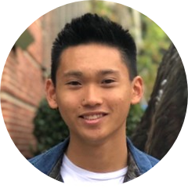
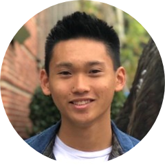
Emma Wood, Chief Technology Officer
Hi friends! My name is Emma Wood, and I’m a freshman at the University of California, Berkeley studying Electrical Engineering and Computer Science. As Director of Technology for Masked Heroes Initiative, my responsibilities include running our website and collaborating with other team members to present updated COVID-19 information to the public. My hobbies include travelling, kayaking, reading political theory, having bonfires at the beach with my loved ones, and playing with my dog and two cats. I hope to someday work as a software engineer for a nonprofit organization and perhaps open my own homeless shelter or animal sanctuary. To reach me with questions or business opportunities, you can contact me at my email: woodemmalea@berkeley.edu.Anooj Desai, Technology Associate
Hi, my name is Anooj Desai and I am currently a sophomore at UC Berkeley studying Computer Science and Data Science. My interests are in the areas of data structures, machine learning and data analytics. I am also passionate about the intersection between technology and social good. I deeply resonate with the mission statement of MHI and want to continue to build the website and hopefully develop new technologies that will assist with the club’s activities. Besides MHI, I am a part of the Events Committee of ANova, a club at UC Berkeley dedicated to mentoring students of all backgrounds in computer science and I am also a project manager at Data Science Society (DSS) at Berkeley. My hobbies include playing volleyball, following the NBA, discovering new recipes to cook, and playing the keyboard.Justin Figueroa, Technology Associate
Hello, I am Justin Figueroa, a Computer Science major attending University of California, Riverside. At MHI, I am responsible for building on our existing technologies as well as keeping information on our platforms as updated as possible. In my free time, I enjoy playing basketball and the piano/ukulele. You can usually find me on my computer working on various projects when I get the chance.Advising
Advising provides business, strategy, and leadership advising for the organization, and is in charge of the maintenance of all university organization level members. 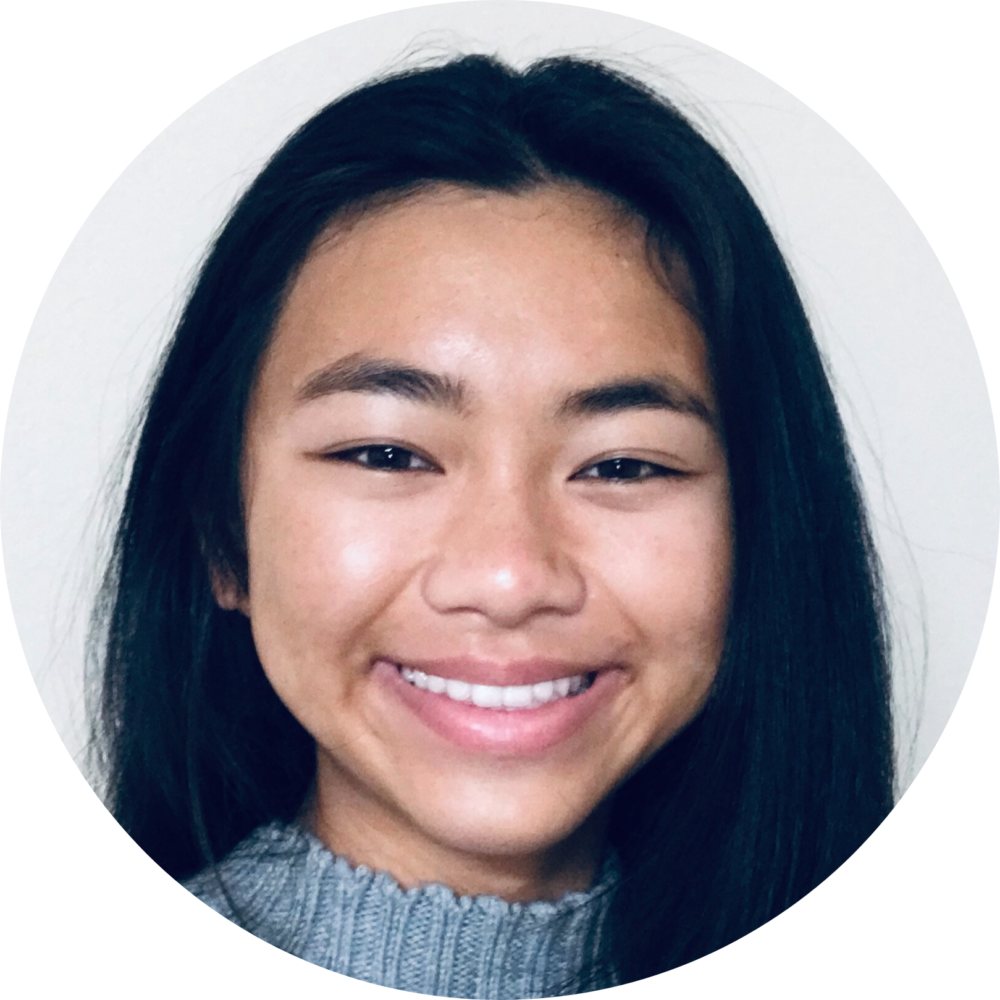
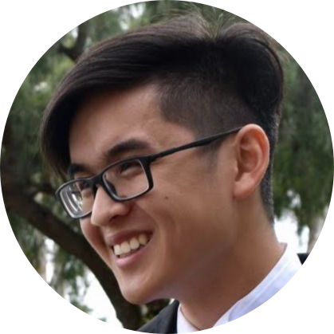
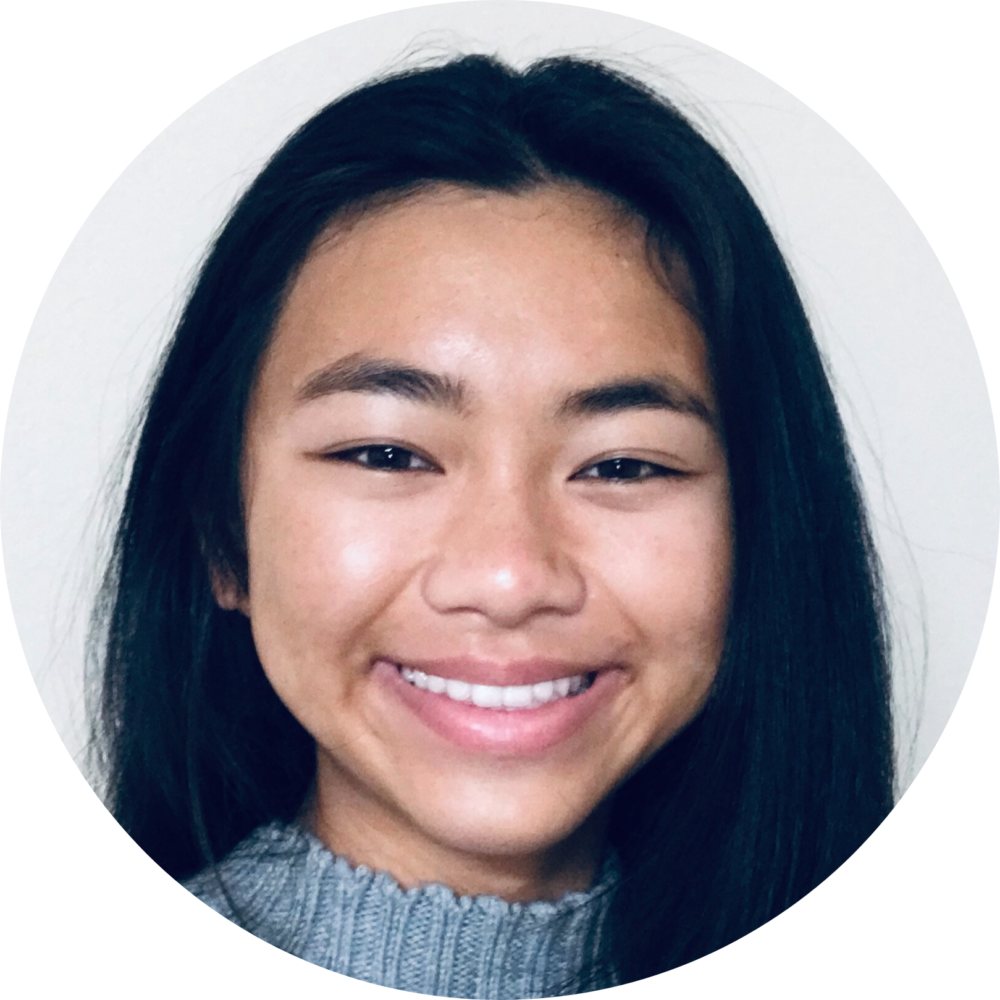
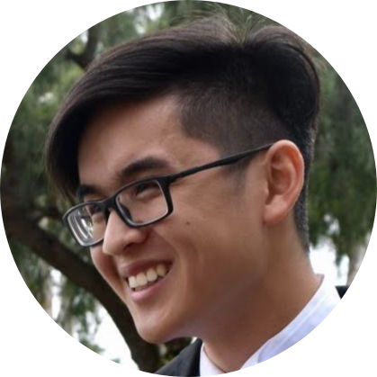


Saleem Haider, Chief Strategy Officer
As a 19-year-old student at California State University, Fullerton, I am a Junior in the Mihaylo Business Honors Program. It has been my pleasure to have acted as a TEDx speaker for three concurrent years, and I am currently president and founder of TEDxCSUF. I will be a returning intern at PwC in their Deals Advisory, FDD practice for the summer of 2021. I currently serve as an Executive Director of PFrofessional Development for the Business Honors Program and am on a 3-year graduation track from high school to graduate, CPA Eligible, with 165/150 semester units. Contact me at saleemhaider01@csu.fullerton.edu with any inquiries or opportunities.Natalie Chen, UC Irvine Branch President
Hello! I am currently a second-year student at UCI, majoring in Public Health sciences. I joined MHI in hopes that my teammates and I can have a significant impact in reducing the spread of Covid-19 in disadvantaged communities. As co-president, my responsibilities included initiating the new club registration process at UCI and assigning specific roles to incoming members. I have loved collaborating with others on this very important goal and am excited to meet more newcomers joining our team. Outside of MHI, I have enjoyed volunteering at hospitals, assisting children in after-school programs, swimming, and exploring new places in SoCal. In the future, I envision myself pursuing a career in epidemiology and disease prevention. Overall, I hope I can dedicate my career to mitigating the quantity of preventable deaths on a national, or even global scale.William Chung, UC San Diego Branch President
Hello! My name is William Chung and I am a second year computer science major at UCSD. One of my hopes for the future is to be able to apply what I am learning now to a worthwhile and beneficial cause, a hope that has in part led me to Masked Heroes Initiative. I joined MHI as a way to contribute to combating the COVID-19 public health crisis because I believed that the only way to get through it is together. Since joining, my belief in community action and service has only been strengthened. I am looking forward to all the amazing work that MHI and my branch at UCSD will accomplish, and I am grateful to be a part of it all. On a more personal note, in my free time I enjoy spending time with family and friends and just exploring, from exploring nature to exploring topics I haven’t learned about before!Brendan Tsuda, Senior Advisory Specialist
Hey everyone! My name is Brendan Tsuda and I am a senior at UC Berkeley, majoring in Chemical Biology and minoring in Bioengineering. During college, I spend most of my time reaching out to and mentoring at local elementary and middle schools with students in STEM as a Site Leading Coordinator in Berkeley Engineers and Mentors. In my free time, I enjoy playing basketball and tennis, cooking, and traveling. My role in MHI is to assist in gathering funds for the organization.Sunay Dagli, Technology Advisor
Hey! I am a sophomore at UC Berkeley, where I am pursuing an Energy Engineering and Electrical Engineering & Computer Science major in the College of Engineering. I'm passionate about the intersection between software development and impact-driven fields such as sustainability. My interests include data structures, sustainable technologies, and software development. Contact me at sunaydagli@berkeley.edu for any opportunities or information!Operations
Operations finds areas in need and coordinates donations of various PPE, including masks, hand sanitizer, gowns, gloves, and other equipment.

 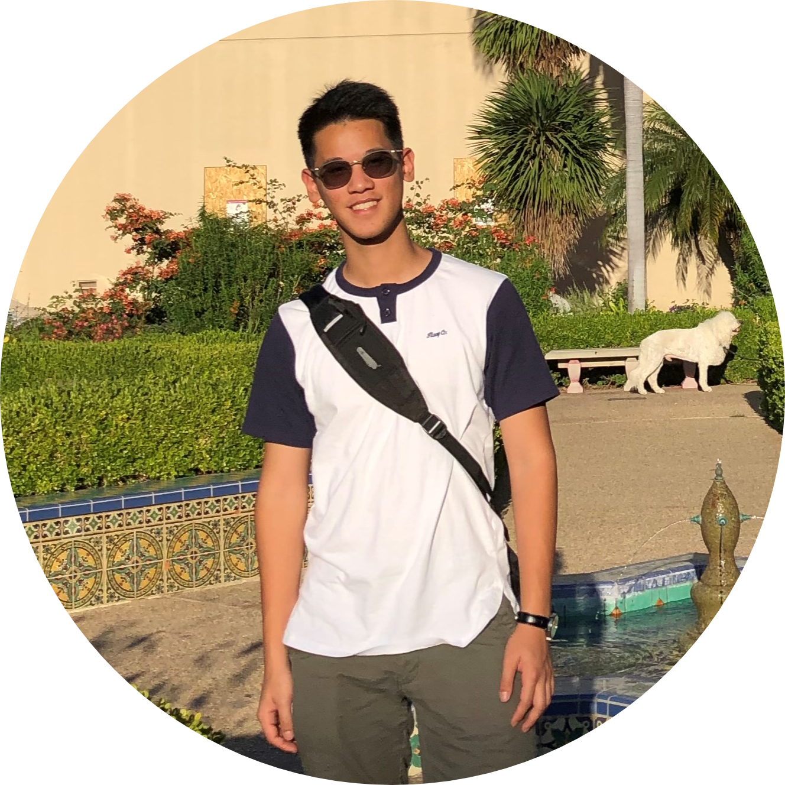
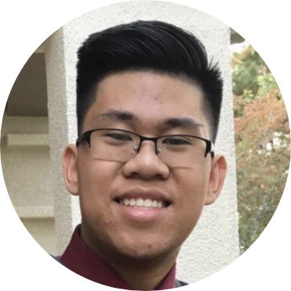
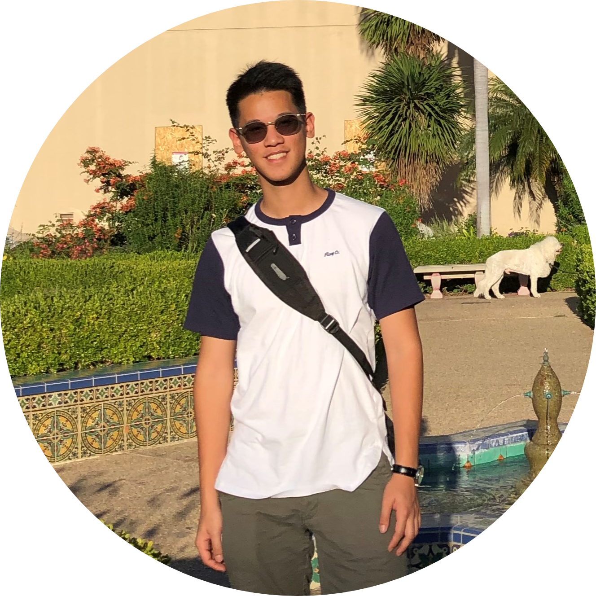
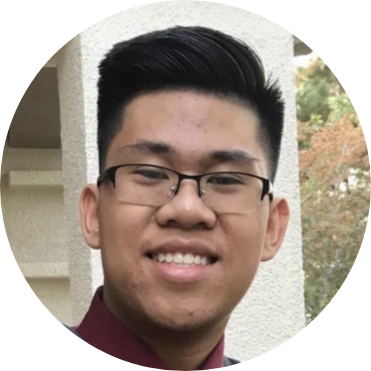